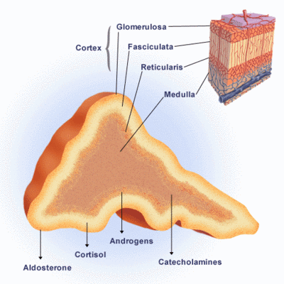
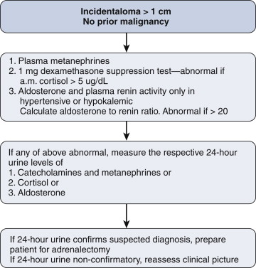
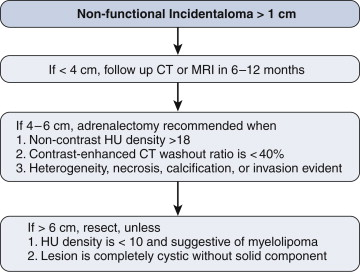

Adrenal Incidentaloma
DEFINITION
Adrenal lesion 1cm or more discovered on a radiological
exam performed for an indication other than adrenal disease.
- ie excludes patients undergoing cancer staging.
D E A B M I M
EPIDEMIOLOGY
Large increase at present due to increasing CT usage.
- between 1-5% of CTs may have an incidental adrenal abnormality
Increases with age.
- <1% in pts <30, and >7% in pts >70
--> Greater concern for malignant potential with larger
lesions in younger patients
D E A B M I M
AETIOLOGY
Vast majority are benign non-functional adenomas.
- except referral bias to surgeons means we see the more significant
ones.
Adenoma
- non-functioning adenoma ~80%
Functioning adenoma
- cortisol producing adenoma / (subclinical) Cushings ~5%
- aldosteronoma / Conn's syndrome ~1%
Phaeochromocytoma ~5%
Adenocortical carcinoma ~5%
Metastatic disease ~2.5%
Less frequent causes include: adrenal cyst, haemorrhage, lymphoma,
sarcoma, neuroganglioma.
D E A B M I M
BIOLOGICAL BEHAVIOUR
Important are:
1. Is the lesion biochemically active?
2. Is the lesion benign or malignant?
Paramount to work with radiologists and endocrinologists to achieve
good workup.
Adrenal Physiology

Adrenal Hormone Overproduction
Phaeochromocytoma
Aldosteronoma
- remember not all pts are hypokalaemic, so screen all hypertensives
Cortisol-producing adenoma
Androgen excess
D E A B M I M
MANIFESTATIONS
Biochemical Manifestations
As per cause, including:
- hypertension that is difficult to control despite multiple meds
- cortisol excess e.g. unexplained weight gain, hyperglycaemia,
hypertension, osteopenia, fatigue (moon facies, buffalo hump, striae
more typical in full Cushing's disease)
D E A B M I M
INVESTIGATIONS
Evaluation of Hormonal Function
Keep it as simple as possible and focus on highest yield
investigations

Principles
1. For Phaeo, most sensitive markers are serum
metanephrines and normetanephrines
- ie breakdown products of adrenaline and noradrenaline; measuring
these directly is pointless due to wild fluctuations
- if 2x normal or higher, pt has a phaeo
- if normal, virtually no possibility of a false negative test.
- if in-between (common)... exclude drug effect e.g. beta blockers
and ACE inhibitors and discontinue and retest
- if still in doubt, proceed to 24h urine collections of
catecholamines, metanephrines and vanillylmandelic acid (an
end-stage metabolite.
2. For cortisol-secreting adenoma, need dexamethasone
suppression test; this is >95% sensitive.
- note pt (by def'n of being an incidentaloma) won't have full blown
Cushing's.
- 1mg of dexamethasone before bedtime
- then morning fasting blood sampling: morning cortisol should
suppress to <5 ug/dL.
- if not, do confirmatory testing for elevated 24-hr urinary free
cortisol.
- if confirmed, then do serum ACTH (adrenocorticotropic hormone) to
confirm excess cortisol is from adrenal and not pituitary or ectopic
source.
3. For aldosterone; only significant testing yield if
hypertensive or hypokalemic.
- typically these lesions are small (1-2cm) and benign in
appearance.
- measure both serum aldosterone and plasma renin activity, and then
calculate aldosterone to renin ratio
- if >20 then reflects autonomous aldosterone secretion and
positive for primary hyperaldosteronism.
- then do confirmatory 24h urine collect for aldosterone.
Complicating matters is that 1/3 of hyperaldosteronism is caused by
bilateral hyperplasia.
- so contralateral slight enlargement may be significant.
- then adrenal venous vein sampling may be required, but this is
complex as requires simultaneous IV ACTH while collecting aliquots
from both veins for aldosterone and cortisol.
What if pt has bilateral incidentaloma?
That is rare.
If tests show fx, e.g. for phaeo, must gather as much info about
each lesion prior to surgery
- e.g. further imaging with MRI if reqd; try show that one is likely
a benign cortical adrenal adenoma and go for the other.
If suggest bilateral macronodular adrenal hyperplasia, and
subclinical Cushing's, unilateral adrenalectomy may suffice.
Imaging Studies
General picture gained by size, contour, complexity, presence of
calcification and necrosis, and Hounsfield unit density.
1. Lesion Size
- <4cm: <2% will be ACC; vs 20% of lesions >6cm.
Review previous imaging for size changes
- if no change over 2y, risk of malignancy is extremely low... if
was not present within 5y window, then risk extremely high
2. Features
Heterogeneous, irregular lesions with necrosis are suspicious
- particularly so if invasive.
Benign lesions typically small, homogenous, and well defined.
3. Hounsfield Units
Vary by lipid concentration.
Lipid rich: typically <18
- If unenhanced HU <10, then 98% likely to be benign
- And if not biochemically active, can follow in
Phaeo and malignancies have few lipids and measure higher.
- but lipid-poor adenomas account for ~20% or more, so be aware that
high HU not necessarily all bad
4. Adrenal Protocol CT
Useful when dealing with a small, relatively benign-appearing
incidentaloma with higher HU density
Three phases with thin 3mm cuts
- with and without IV contrast; immediate vs 15m delayed imaging to
take advantage of differences in uptake and washout.
If washout ratio 40% or more then more likely benign
- if washout <40%, suspicious for malignancy
This is highly accurate regardless of HU density and sensitivity /
specificity each >90% with experienced radiologists.
5. Role of MRI?
Well accepted and useful diagnostic tool.
Images without radiation, useful in contrast allergy, excellent
resolution for tissue characterization and superior to CT for local
invasion.
- less spatial resolution
Both T1 and T2 weighted images used.
Primary and metastatic malignancies are denser than benign so
brighter (higher fluid content).
- also true of phaeo, but 30% will have low intensity.
- adenomas usually have low intensity on T2 imaging.
Fat suppression used so that T2 images are not degraded; important
also for fatty content of lesions (myelolipoma).
Contrast helps determine patterns
- washout curves are similar to those observed on CT; delayed
washout for malignancies.
More advanced techniques are known such as chemical shift imaging.
6. Pathognomonic Features
MIBG imaging for phaeo
- a neuroendocrine scan (iodine-123-meta-iodobenzylguanidine);
nuclear imaging; high uptake in phaeo unless poorly differentiated.
Myelolipoma shows macroscopic fat
Cysts can be clearly diagnosed if no solid component
Haemorrhage into a lesion may be observed (most should be excised.
Adrenal Biopsy?
Rarely helpful or indicated.
Should not be performed; produces haemorrhage, obliterates planes
and makes surgical dissection difficult.
No role in workup, unless suspecting metastatic disease in pts with
lymphoma, melanoma, or extra-adrenal cancer.
D E A B M I M
MANAGEMENT
Indications for Excision : Non-functional Incidentaloma

Principles
All functioning lesions should be removed.
In general, lesions >4cm should be removed.
But safe features as above may allow nonoperative approach in older
or high-risk patients.
Adrenalectomy
Lap now standard approach.
- less blood loss, fewer wound complications, reduced postoperative
pain and complications shorter stay
- complexity increases with size, but excision of lesions <10cm
is pretty routine.
Technical aspects
Performed transabdominally in lateral decubitus position or
retroperitoneally with pt prone.
- latter useful if past surgery but access more limited especially
when tumours are large.
- trans-abdo more widely used, now low complications rates.
Patient on beanbag, axillary role, bed flexed to open operating
space.
- 12 mm scope port two fingers below costal margin, midclavicular
line
- 2x 5mm ports 6cm apart lateral to camera port, further 5mm port
medial on right for liver retraction.
On left side:
- mobilize splenic attachments to fundus
- spleen falls medially, pulling tail of pancreas and allowing
better adrenal exposure.
- avoid similar-looking pancreatic tissue
- avoid entering plane lateral to kidney; mobilizing it will obscure
the adrenal.
On right side:
- be cognizant of IVC
It is not essential to find and ligate the adrenal vein first, even
in phaeo
- safer to do a top-down approach, peeling out of retroperitoneum
until attached by vein.
- be aware of tail of adrenal cortical tissue travelling down the
vein in proximity to its jx with renal vein on left and IVC on
right. Do not leave tissue.
Lap for malignant lesions?
More controversial but now commonly done.
Open remains gold standard for ACC for oncologically clear margins;
don't violate capsule or spill tumour.
- also facilitates control of the IVC, aorta, renal vessels; max
exposure for en-bloc resections.
Patient Preparation
Depends on if tumour is functional.
Phaeo?
1. Alpha-blockade with phenoxybenzamine 10mg daily, titrated to 10mg
tds over 3weeks.
- then lap adrenalectomy
- side effects are orthostatic hypotension, fatigue and sinus
congestion.
- beta-blockade not recommended unless tachycardic.
2. Adequately hydrate to make up for volume depletion
3. Experienced anaesthetist essential; even the best prepared
patients can experience extreme intraoperative hemodynamic
instability
Cortisol Excess?
Adrenally insufficient so require periop stress steroid doses.
- addisonian state for up to a year, so endocrine boss required.
Aldosterone?
No specific recommendations.
Usually hypokalaemia resolves spontaneously; many still require some
anti-hypertensive meds.
Follow Up
Estimated 5yr risk of adrenal incidentaloma enlargement
or hyperfunction estimated at 20%
So annual screening for phaeo and cortisol for 3 years.
If <4cm, and safe features, annual CT for 2-3 years until no
change.
If suspect at all, then 3, 6, and 12 month CTs.
Growth expected to be >2cm per year.
Lesions >1cm should be removed.
D E A B M I M
REFERENCES
Cameron 10th